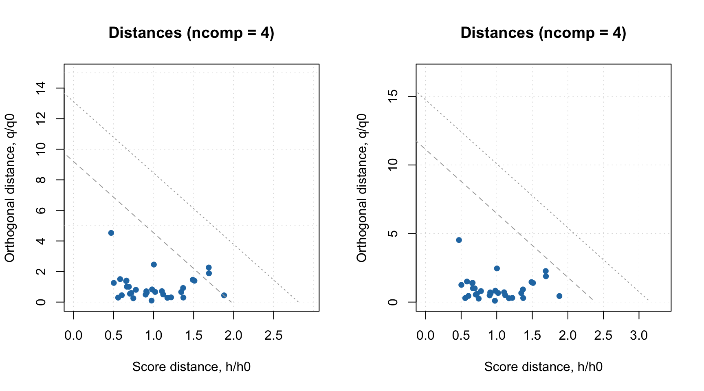
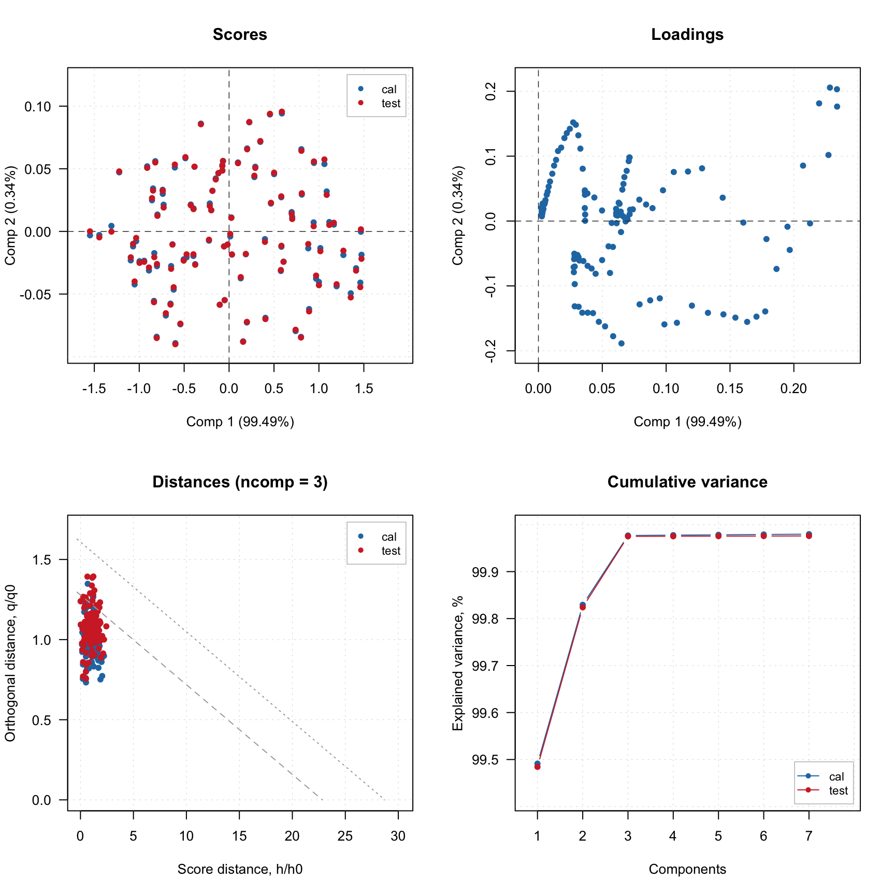
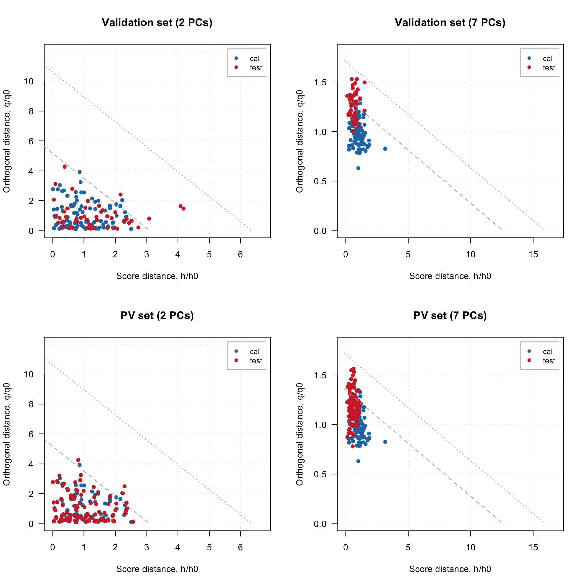

Model validation
PCA model can be validated using a separate validation set (in some literature validation set is also called a test set, although usually test set is used only for estimation of performance of the final, optimized model) — measurements for objects taken from the same population as the calibration set but which were not utilized for the model calibration. If you do not have a separate validation set you can generate one using Procrustes cross-validation. This section will show both approaches.
Using validation set
If validation set is available it can be provided to pca() function as a value for named parameter x.test. In the example above we get UV/Vis spectra from simdata datasets. This dataset has spectra for bot calibration and validation/test set. So we use the first set to calbirate a PCA model and then use the second set as validation/test set. After that we created plot overview for the model which has results from both sets.

The validation results are, of course, represented by result objects, which are fields of a model object similar to cal, but with names test. And here is the info for both result objects:
##
## Results for PCA decomposition (class pcares)
##
## Major fields:
## $scores - matrix with score values
## $T2 - matrix with T2 distances
## $Q - matrix with Q residuals
## $ncomp.selected - selected number of components
## $expvar - explained variance for each component
## $cumexpvar - cumulative explained variance##
## Results for PCA decomposition (class pcares)
##
## Major fields:
## $scores - matrix with score values
## $T2 - matrix with T2 distances
## $Q - matrix with Q residuals
## $ncomp.selected - selected number of components
## $expvar - explained variance for each component
## $cumexpvar - cumulative explained varianceLet us compare, for example, the explained variance values for the results:
## cal test
## Comp 1 99.5 99.6
## Comp 2 0.3 0.3
## Comp 3 0.1 0.1
## Comp 4 0.0 0.0
## Comp 5 0.0 0.0
## Comp 6 0.0 0.0
## Comp 7 0.0 0.0Every model and every result object has a method summary(), which shows some statistics for evaluation of a model performance. Here are some examples.
##
## Summary for PCA model (class pca)
## Type of limits: ddmoments
## Alpha: 0.05
## Gamma: 0.01
##
## Eigenvals Expvar Cumexpvar Nq Nh
## Comp 1 0.596 99.49 99.49 4 2
## Comp 2 0.002 0.34 99.83 3 5
## Comp 3 0.001 0.15 99.98 125 7
## Comp 4 0.000 0.00 99.98 116 8
## Comp 5 0.000 0.00 99.98 113 10
## Comp 6 0.000 0.00 99.98 107 12
## Comp 7 0.000 0.00 99.98 112 12##
## Summary for PCA results
##
## Selected components: 7
##
## Expvar Cumexpvar
## Comp 1 99.49 99.49
## Comp 2 0.34 99.83
## Comp 3 0.15 99.98
## Comp 4 0.00 99.98
## Comp 5 0.00 99.98
## Comp 6 0.00 99.98
## Comp 7 0.00 99.98##
## Summary for PCA results
##
## Selected components: 7
##
## Expvar Cumexpvar
## Comp 1 99.64 99.64
## Comp 2 0.25 99.89
## Comp 3 0.09 99.98
## Comp 4 0.00 99.98
## Comp 5 0.00 99.98
## Comp 6 0.00 99.98
## Comp 7 0.00 99.98The same methodology is used for any other method, e.g. PLS or SIMCA. In the next section we will look at how to use plotting functions for models and results.
Procrustes cross-validation
If you do not have a dedicated validation/test set you can generate one using Procrustes cross-validation. The theory behid the method is available in this paper (it is Open Access), and all additional information can be found in GitHub repository of the project.
In order to use PCV you need to install a dedicated package, pcv, first. Here is a code which loads the pcv package (here I assume that you have already installed it) and create a PV-set (analogue of validation set generated by PCV) using PCA model.
The idea behind PCV is as follows. PCV first splits rows of calibration set into several segments. Number of segments and the way to make the split (systematic or random) is defined by a value of parameter cv. As you can see in the code above, I used cv = list("ven", 4). This means that I want to create 4 segments (subsets) using systematic split “Venetian blinds”. So in the first segment I will have rows number 1, 11, 21, … and in the second segment I will have rows: 2, 12, 22, etc.
The idea of splits is similar to cross-validation, and PCV is based on cross-validation resampling. You can also use random splits or leave-one-out splits. But in general Venetial blinds with relatively few segemnts (from 3 to 8) will work best. You also need to speciy number of components in the model, just use any number much larger than the expected optimal number. PCV is not sensitive to overfitting.
After the split is done it creates local PCA models different subsets of your calibration set, measured uncertainties among the local models and then introduces this uncertainty to the calibration set hence creating a new set of measurements.
The plot below compares spectra from the original calbiration set (left) and the generated PV set (right). As you can see, although the shape of individual spectra look similar the spectra are not identical.

Now we can create a PCA model and validate using the created PV-set similar to what we have done in case of dedicated validation set:

The four plots below show distance plots for model validated using separate validation set (top) and the PV-set (bottom). The left plots a made for 2 principal components and the right plots are made for 7 components. As you can see both separate validation set and the one generated using PCV show similar patterns.
par(mfrow = c(2, 2))
plotResiduals(m, ncomp = 2, main = "Validation set (2 PCs)")
plotResiduals(m, ncomp = 7, main = "Validation set (7 PCs)")
plotResiduals(m2, ncomp = 2, main = "PV set (2 PCs)")
plotResiduals(m2, ncomp = 7, main = "PV set (7 PCs)")